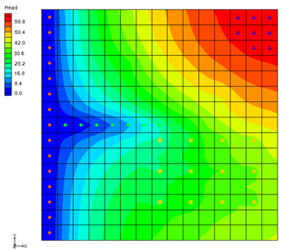

GMS Tutorials: MODFLOW – Grid Approach¶
Introduction
Two approaches can be used to construct a MODFLOW simulation in GMS: the grid approach and the conceptual model approach. The grid approach involves working directly with the 3D grid to apply sources/sinks and other model parameters on a cell-by-cell basis. The conceptual model approach involves using the GIS tools in the Map module to develop a conceptual model of the site being modeled. The data in the conceptual model are then copied to the grid. The grid approach to MODFLOW pre-processing is described in this tutorial.
In most cases, the conceptual model approach is more efficient than the grid approach. However, the grid approach is useful for simple problems or academic exercises where cell-by-cell editing is necessary. Completing this tutorial is not required before beginning the conceptual model tutorials.
This tutorial uses a modified version of the sample problem (Figure 1) described near the end of the MODFLOW Reference Manual. Three aquifers will be simulated using three layers in the computational grid. The grid covers a square region measuring 75000 feet by 75000 feet.
The grid will consist of 15 rows and 15 columns, each cell measuring 5000 feet by 5000 feet in plan view. For simplicity, the elevation of the top and bottom of each layer will be flat. The hydraulic conductivity values shown are for the horizontal direction. For the vertical direction, the tutorial will use some fraction of the horizontal hydraulic conductivity.
Flow into the system is due to infiltration from precipitation and is defined as recharge in the input. Flow out of the system is due to buried drain tubes, discharging wells (not shown on the diagram), and a lake, which is represented by a constant head boundary on the left. Starting heads will be set equal to zero, and a steady state solution will be computed.

Figure 1 Sample problem to be solved
This tutorial discusses and demonstrates the following:
Creating a 3D grid
Setting up a MODFLOW simulation
Checking the simulation and running MODFLOW
Assigning zone budgets
Viewing the report
Getting Started
Do as follows to get started:
If necessary, launch GMS.
If GMS is already running, select File | New command to ensure that the program settings are restored to their default state.
Units
First, define the units used in the model. The units chosen will be applied to edit fields in the GMS interface as a reminder of the proper units for each parameter.
Select Edit | Units… to bring up the Units dialog.
Click the button next to the Length field to bring up the Display Projection dialog.
Select “Meters” from the Units drop-down in both the Horizontal and Vertical sections.
Click OK to close the Display Projection dialog.
Select “d” (for days) from the Time drop-down. Ignore the other units as they are not used for flow simulations.
Click OK to exit the Units dialog.
Creating the Grid
The first step in solving the problem is to create the 3D finite difference grid.
In the Project Explorer, right-click on the empty space and select New | 3D Grid… to bring up the Create Finite Difference Grid dialog.
In both the X-Dimension and Y-Dimension sections, enter “22860.0” for Length and “15” for Number cells.
In the Z-Dimension section, enter “3” for Number cells.
The top and bottom elevations will be entered later for each layer of the grid. Thus, the thickness of the cells in the z directions entered here will not affect the MODFLOW computations.
Click OK to close the Create Finite Difference Grid dialog.
The grid should appear in the window in plan view. A simplified representation of the grid should also appear in the Mini-Grid Toolbar (Figure 2).

Figure 2 Mini-Grid toolbar
Creating the MODFLOW Simulation
The next step is to initialize the MODFLOW simulation.
Packages
In the Project Explorer, right-click on “ grid” and select New MODFLOW… to bring up the MODFLOW Global/Basic Package dialog.
First, select the packages. The input to MODFLOW is subdivided into packages. Some of the packages are optional and some are required. The Global and Basic packages are both always required, and are therefore always active. There are no settings to turn them on or off.
Click Packages… to bring up the MODFLOW Packages / Processes dialog.
This dialog specifies which of the optional packages will be used to set up the model. To select the optional packages, do as follows:
In the Solver section, select the SIP1 – Stongly Impl. Proc.
In the Optional packages / processes section, turn on DRN1 – Drain, RCH1 – Recharge, and WEL1 – Well.
Click OK to exit the MODFLOW Packages / Processes dialog.
Do not close the MODFLOW Global/Basic Package dialog.
The IBOUND Array
The next step is to set up the IBOUND array. The IBOUND array is used to designate each cell as either active (IBOUND > 0), inactive (IBOUND = 0), or constant head (IBOUND < 0). For this problem, all cells will be active, except for the first two layers in the leftmost column, which will be designated as constant head.
Click IBOUND… to bring up the IBOUND Array dialog.
The values of the IBOUND array are displayed here in a spreadsheet-like fashion, one layer at a time. The edit field in the upper left corner of the dialog can be used to change the current layer. For this problem, all of the values in the array need to be greater than zero, except for the left column of the top two layers, which should be less than zero.
By default, the values in the array should already be greater than zero. Therefore, changing the values for the constant head cells is all that needs to be done. This can be accomplished by entering a value of “-1” for each of the thirty constant head cells.
However, there is another way to edit the IBOUND array that is much simpler for this case. This method will be described later in the tutorial. For now, leave all of the cells active.
Click Cancel to exit the IBOUND Array dialog.
Top and Bottom Elevations
The next step is to set up the top and bottom elevation arrays.
Click Top Elevation… to bring up the Top Elevation dialog.
Enter “1” for the Layer.
Click Constant → Layer… to bring up the Layer Value dialog.
Enter “60.0” for the Constant value for layer, and click OK to close the Layer Value dialog.
Click OK to exit the Top Elevation dialog.
GMS forces the top of a layer to be at the same location as the bottom of the layer above. Thus, it is only necessary to enter the bottom elevations of all the layers now and the tops of the layers will be set automatically.
Click Bottom Elevation… to bring up the Bottom Elevation dialog.
Enter “1” for the Layer.
Click Constant → Layer… to bring up the Layer Value dialog.
Enter “-45.0” for the Constant value for layer, and click OK to close the Layer Value dialog.
Enter “2” for the Layer.
Click Constant → Layer… to bring up the Layer Value dialog.
Enter “-120.0” for the Constant value for layer, and click OK to close the Layer Value dialog.
Enter “3” for the Layer.
Click Constant → Layer… to bring up the Layer Value dialog.
Enter “-215.0” for the Constant value for layer, and click OK to close the Layer Value dialog.
Click OK to exit the Bottom Elevation dialog.
Turn on Starting heads equal grid top elevation near the bottom of the dialog.
Click OK to exit the MODFLOW Global/Basic Package dialog.
Starting Heads
The starting heads array is used to establish an initial head value when performing a transient simulation. Since this project is computing a steady state simulation, the initial head for each cell shouldn't make a difference in the final solution.
However, the closer the starting head values are to the final head values, the more quickly MODFLOW will converge to a solution. Furthermore, for certain types of layers, if the starting head values are too low, MODFLOW may interpret the cells as being dry. For the problem at hand, the initial values are set to “60” because Starting heads equal grid top elevation is turned on in the MODFLOW Global/Basic Package dialog.
The starting heads array is also used to establish the head values associated with constant head cells. For this problem, the constant head values should be zero. Since all of the starting head values are already “60” by default, it will be necessary to make these changes later in the tutorial.
Assigning IBOUND Values Directly to Cells
As mentioned above, the IBOUND values can be entered through the IBOUND Array dialog. In some cases, it is easier to assign values directly to cells. This can be accomplished by editing the properties of the cells. Before using the command, it is necessary to first select the cells in the leftmost column of the top two layers.
Viewing the Left Column
To simplify the selection of the cells, change the display to make the leftmost layer visible.
Turn on Ortho Mode .
Switch to Side View .
The grid appears very thin. To make things easier, increase the Z magnification so that the grid appears stretched in the vertical direction:
Click Display Options to bring up the Display Options dialog.
Enter “15.0” for the Z magnification and click OK to close the Display Options dialog.
Selecting the Cells
Do the following to select the cells:
Make sure Ortho Mode is still on and select the Select Cells tool so the Mini-Grid Toolbar appears
Enter “1” in the Mini-Grid Toolbar and press the Tab key.
Notice column number one (the leftmost column) is now shown.
Drag a box around all of the cells in the top two layers of the grid to highlight them (Figure 3).
Figure 3 Highlight the first two layers
Changing the IBOUND Value
To edit the IBOUND value:
Right-click on one of the selected cells and select Properties… to bring up the 3D Grid Cell Properties dialog.
Select “Specified Head” from the drop-down in the Value column of the IBOUND row.
Enter “0.0” in the Value column of the Starting head row.
Click OK to exit the 3D Grid Cell Properties dialog.
Switch to Plan View .
Notice that an orange diamond symbol is displayed in the cells that were edited, indicating they are constant head cells (Figure 4).

Figure 4 Constant head cells marked on the left
5.4 Checking the Values
To ensure that the IBOUND values were entered correctly:
Select MODFLOW | Global Options… to bring up the MODFLOW Global/Basic Package dialog.
Click IBOUND… button to bring up the IBOUND Array dialog.
Choose the up arrow to the right of the layer field in the upper left corner of the dialog to cycle through the layers.
Note that the cells in the leftmost column in the top two layers all have a value of “-1”. Most of the MODFLOW input data can be edited in GMS using either a spreadsheet dialog such as this one, or by selecting a set of cells and entering a value directly.
Click Cancel to exit the IBOUND Array dialog.
Click Cancel to exit the MODFLOW Global/Basic Package dialog.
The LPF Package
The next step is to enter the data for the Layer Property Flow (LPF) package. The LPF package computes the conductance between each of the grid cells and sets up the finite difference equations for the cell-to-cell flow.
To enter the LPF data:
Select MODFLOW | LPF – Layer Property Flow… to bring up the LPF Package dialog.
In the Layer data section, enter “1” for the Layer.
The options in the Layer data section are used to define the layer type and hydraulic conductivity data for each layer. This problem has three layers. The top layer is unconfined, and the bottom two layers are confined. The default Layer type in GMS is Convertible, which means the layer can be confined or unconfined. Thus, it isn’t necessary to change the layer types.
The buttons on the right side of the Layer Data section are for entering the parameters necessary for computing the cell-to-cell conductances. MODFLOW requires a set of parameters for each layer depending on the layer type.
Top Layer
First, enter the data for the top layer:
Click Horizontal Hydraulic Conductivity… to bring up the Horizontal Hydraulic Conductivity dialog.
Click Constant → Layer to bring up the Layer Value dialog.
Enter a value of “15.0” for the Constant value for layer and click OK to close the Layer Value dialog.
Click OK to exit the Horizontal Hydraulic Conductivity dialog.
Click Vertical Anisotropy (Kh/Kv)… to bring up the Vertical Anisotropy (Kh/Kv) dialog.
Click Constant → Layer… to bring up the Layer Value dialog.
Enter “10.0” for the Constant value for layer and click OK to close the Layer Value dialog.
Click OK to exit the Vertical Anisotropy (Kh/Kv) dialog.
Middle Layer
Next, enter the data for the middle layer:
In the Layer data section, enter “2” for the Layer.
Repeat steps 1–8 from section 6.1, entering “0.9” for the Constant value for layer for the horizontal hydraulic conductivity and “5.0” for the Constant value for layer for the vertical anisotropy.
Bottom Layer
Finally, enter the data for the bottom layer:
In the Layer data section, enter “3” for the Layer.
Repeat steps 1–8 from section 6.1, entering “2.0” for the Constant value for layer for the horizontal hydraulic conductivity and “5.0” for the Constant value for layer for the vertical anisotropy.
When done, click OK to close the LPF Package dialog.
The Recharge Package
Entering data in the recharge package allows simulation of the recharge to an aquifer due to rainfall and infiltration.
To enter the recharge data, do the following:
Select MODFLOW | Optional Packages | RCH – Recharge… to bring up the MODFLOW Recharge Package dialog.
Click Constant → Array to bring up the Grid Value dialog.
Enter “0.0009” for the Constant value for grid and click OK to close the Grid Value dialog.
Click OK to exit the MODFLOW Recharge Package dialog.
The Drain Package
The next step is to define the row of drains in the top layer of the model. To define the drains, first select the cells where the drains will be located, and then select the Point Sources/Sinks command.
The drains are located in the top layer (layer 1). Since this is the current layer, it isn’t necessary to change the view.
Notice that as the cursor moves across the grid, the IJK indices of the cell beneath the cursor are displayed in the Edit Window at the bottom of the screen (Figure 5, bottom).

Figure 5 Cells to be selected (top) and IJK indices of cell under cursor (bottom)
To select the cells, do the following:
Using the Select Cells tool while holding down the Shift key, draw a box selecting cells 2–10 on row 8 (Figure 5, top). The first cell will indicate “IJK: 8,2,1”, meaning “row 8, cell 2, layer 1” (Figure 5, bottom).
To assign drains to the cells:
Right-click on one of the selected cells and select Sources/Sinks… to bring up the MODFLOW Sources/Sinks dialog.
Select “Drain (DRN)” from the list on the left.
Click Add BC to add a new instance of a drain to each of the selected cells.
At this point, enter an elevation and a conductance for the selected drains. The drains all have the same conductance but the elevations are not all the same.
Enter the following values in the Elevation (m) and Conductance (m^2/d) columns in the list of drains:
Click OK to close the MODFLOW Sources/Sinks dialog.
Deselect the cells by clicking anywhere outside the grid.
The drains should now be marked by green circles (Figure 6).

Figure 6 Location of drain cells (green circles)
The Well Package
Several wells need to be defined. Most of the wells are in the top layer but some are in the middle and bottom layers.
Top Layer Wells
Define the wells in the top layer (layer 1) first:
Using the Select Cells tool while holding down the Ctrl key, select the cells shown in 
Figure 7 (the twelve cells containing yellow squares, rows indicated by red arrows). The coordinates of each well are shown in the table to the right.
Right-click on a selected cell and select Sources/Sinks… to bring up the MODFLOW Sources/Sinks dialog.
Select “Wells (WEL)” from the list on the left and click the Add BC button. Twelve well entries will appear in the spreadsheet area on the right side of the dialog.
In the All row, enter “-12230” in the Q (flow) (m^3/d) column.
A negative value signifies extraction.
Click OK to close the MODFLOW Sources/Sinks dialog.
Deselect the cells by clicking anywhere outside the grid.
Figure 7 Rows with wells (twelve yellow squares)
Middle Layer Wells
The wells in the middle layer (layer 2) need to be defined next. First, it is necessary to view the middle layer.
Click the Up arrow in the Mini-Grid Toolbar switch to layer 2.
Using the Select Cells tool while holding down the Ctrl key, select the cells shown in
Figure 8 (the two cells containing yellow squares, indicated by red arrows). The coordinates of each well are shown in the table to the right.
Right-click on a selected cell and select Sources/Sinks… to bring up the MODFLOW Sources/Sinks dialog.
Select “Wells (WEL)” from the list on the left and click the Add BC button. Two well entries will appear in the spreadsheet area on the right side of the dialog.
In the All row, enter “-12230” in the Q (flow) (m^3/d) column.
Click OK to close the MODFLOW Sources/Sinks dialog.
Unselect the cells by clicking anywhere outside the grid.
Figure 8 Well locations
Bottom Layer Wells
Finally, define a single well on the bottom layer (layer 3):
Click the Up arrow in the Mini-Grid Toolbar to switch to layer 3.
Using the Select Cells tool, select the cell shown in
Figure 9 (indicated by red arrow). The coordinates of the well are “IJK: 5, 11, 3”.
Right-click on the selected cell and select Sources/Sinks… to bring up the MODFLOW Sources/Sinks dialog.
Select “Wells (WEL)” from the list on the left and click the Add BC button. One well entry will appear in the spreadsheet area on the right side of the dialog.
Enter “-0.15” in the Q (flow) (m^3/d) column.
Click OK to close the MODFLOW Sources/Sinks dialog.
Unselect the cell by clicking anywhere outside the grid.
Figure 9 Location of the single well in layer 3
Now that all of the wells have been defined, it is possible to go back to the top layer.
Click the down arrow twice in the Mini-Grid Toolbar to go back to layer 1.
Checking and Saving the Simulation
At this point, the MODFLOW data is completely defined and ready for the simulation run. Because of the significant amount of data required for a MODFLOW simulation, it is easy to omit some of the required data or to define inconsistent or incompatible options and parameters. Such errors will either cause MODFLOW to crash or to generate an erroneous solution. Before saving the simulation and running MODFLOW, always run the MODFLOW Model Checker and check for errors.
The purpose of the Model Checker is to analyze the input data currently defined for a MODFLOW simulation and report any obvious errors or potential problems. However, running the Model Checker successfully does not guarantee that a solution will be correct. It simply serves as an initial check on the input data and can save a considerable amount of time that would otherwise be lost tracking down input errors.
Do the following to run the Model Checker:
Select MODFLOW | Check Simulation… to bring up the Model Checker dialog.
Click Run Check to initiate the model check.
A list of messages is shown for each of the MODFLOW input packages. If everything has been done correctly, the packages should have no errors. When an error exists, select the error in the Model Checker and GMS will select the cells or layers associated with the problem.
When finished reviewing the results of the model check, click Done to exit the Model Checker.
Select File | Save As… to bring up the Save As dialog.
Browse to the modfgrid directory.
Select “Project Files (*.gpr)” from the Save as type drop-down.
Enter “gridmod.gpr” as the File name and click Save to save the project and close the Save As dialog.
Running MODFLOW
It is now possible to run MODFLOW:
Select MODFLOW | Run MODFLOW to bring up the MODFLOW model wrapper dialog.
The super file name is passed to MODFLOW as a command line argument. MODFLOW opens the file and begins the simulation. As the simulation proceeds, some text output in the window will report the solution progress.
When MODFLOW finishes, turn on Read solution on exit and Turn on contours (if not on already).
Click Close to exit the MODFLOW model wrapper dialog.
Viewing the Solution
GMS imports the solution automatically when the MODFLOW window is closed. At this point, a set of head contours for the top layer should be seen. Some cells containing a light blue triangle symbol will also be visible (top right in Figure 10). These cells are flooded, meaning the computed water table is above the top of the cell.
Click Display Options to bring up the Display Options dialog.
Select “3D Grid Data” from the list on the left.
On the MODFLOW tab, click on the blue triangle button to the left of Flooded cells to bring up the Symbol Attributes dialog.
Click the down-arrow button next to Color and select “Skyblue” from the list of colors.
Click OK to close the Symbol Attributes dialog.
Click OK to close the Display Options dialog.

Figure 10 Contours, with flooded cells at top right
Changing Layers
View the solutions on the middle and bottom layers by doing the following:
Click the up arrow in the Mini-Grid Toolbar to go to layer 2 (one click) or layer 3 (two clicks).
When finished viewing the middle and bottom layer solutions, use the down arrow to return to layer 1.
Color Fill Contours and Color Legend
It is also possible to display the contours using a color fill option.
Select Display | Contour Options… to bring up the Dataset Contour Options – 3D Grid – Head dialog.
In the Contour method section, select “Color Fill” from the top drop-down.
At the bottom left, turn on Legend.
Click OK to close the Dataset Contour Options – 3D Grid – Head dialog.
The Graphics Window should appear similar to Figure 11.
Figure 11 Color fill contours with a legend
Zone Budget
Zone Budget is a program developed by the U.S. Geological Survey (USGS) to compute subregional water budgets for MODFLOW groundwater flow models. GMS has incorporated a similar flow budget reporting tool. In GMS, zones are defined by assigning a Zone Budget ID to cells. Once the zones are defined, a report can be generated that shows the flow budget for the zone. The report also includes a component that shows the flow in and out to adjacent zones.
Assigning Zone Budget IDs
In this model, make each layer into a zone.
Switch to Plan View .
Use the up or down arrows on the Mini-Grid Toolbar to switch to layer 2 of the grid.
Using the Select Cells tool, drag a box around all of the cells in layer 2 of the grid.
Right-click on one of the selected cells and select Properties… to bring up the 3D Grid Cell Properties dialog.
Enter “2” for the Zone budget ID.
Click OK to close the 3D Grid Cell Properties dialog.
Use the Mini-Grid Toolbar to switch to layer 3 of the grid.
Repeat steps 3 through 6, entering “3” for the Zone budget ID.
Viewing the Zone Budget Report
It is now possible to view the flow budget for each of the zones.
Select MODFLOW | Flow Budget… to bring up the Flow Budget dialog.
Switch to the Zones tab.
Currently, the report is showing information for the first zone (the top layer of the grid). The report is divided into two sections: flow into the zone and flow out of the zone. Every source/sink present in the model is listed in the report with a flow value. In addition to the sources/sinks, there is a field for the amount of flow that goes between zones.
View the reports for the other two zones by selecting the desired zone from the Zone drop-down.
When finished, click OK to exit the Flow Budget dialog.
Conclusion
This concludes the “MODFLOW – Grid Approach” tutorial. The following topics were discussed and demonstrated:
It is possible to specify which units are being used and GMS will display the units next to input fields to help input the appropriate value. GMS does not do any unit conversions.
The desired MODFLOW packages for use in the model can be selected by choosing the MODFLOW | Global Options… command and clicking the Packages… button.
Most MODFLOW array data can be edited in two ways: via a spreadsheet or by selecting grid cells and using the MODFLOW | Advanced | Cell Properties… command.
Wells, drains, etc. can be created and edited by selecting the grid cell(s) and choosing the MODFLOW | Advanced | Sources/Sinks… command or by right-clicking on a selected cell and selecting the Sources/Sinks… command from the pop up menu.
The Model Checker can be used to analyze the input data and check for errors.
A flow budget report can be generated for a sub-region of the model by assigning Zone budget IDs to the grid and then using the Flow Budget command.